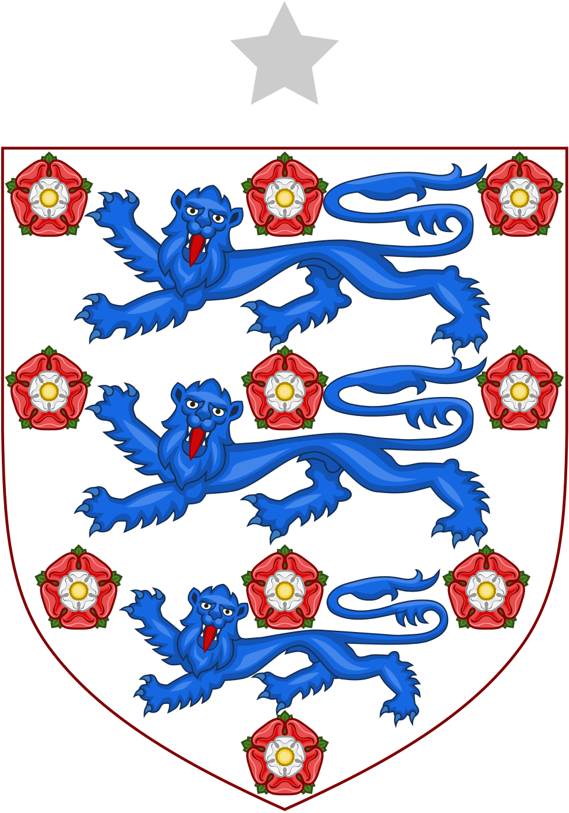

🏴
英格兰 · 2026世界杯实力评估报告
THE THREE LIONS · 三狮军团 · 图赫尔时代启航
一、球队基本信息
26人大名单（2026年5月22日公布）
🧤 门将（3人）
| # | 球员姓名 | 位置 | 所属俱乐部 |
|---|
| 1 | 乔丹·皮克福德（Jordan Pickford） | GK | 埃弗顿（英超） |
| 2 | 迪恩·亨德森（Dean Henderson） | GK | 水晶宫（英超） |
| 3 | 詹姆斯·特拉福德（James Trafford） | GK | 曼彻斯特城（英超） |
🛡️ 后卫（9人）
| # | 球员姓名 | 位置 | 所属俱乐部 |
|---|
| 4 | 约翰·斯通斯（John Stones） | DF | 曼彻斯特城（英超） |
| 5 | 马克·格伊（Marc Guehi） | DF | 曼彻斯特城（英超） |
| 6 | 埃兹里·孔萨（Ezri Konsa） | DF | 阿斯顿维拉（英超） |
| 7 | 丹·伯恩（Dan Burn） | DF | 纽卡斯尔联（英超） |
| 8 | 里斯·詹姆斯（Reece James） | DF | 切尔西（英超） |
| 9 | 蒂诺·利夫拉门托（Tino Livramento） | DF | 纽卡斯尔联（英超） |
| 10 | 贾雷尔·宽萨（Jarell Quansah） | DF | 勒沃库森（德甲） |
| 11 | 尼科·奥赖利（Nico O'Reilly） | DF | 曼彻斯特城（英超） |
| 12 | 迪杰德·斯宾塞（Djed Spence） | DF | 托特纳姆热刺（英超） |
🎯 中场（7人）
| # | 球员姓名 | 位置 | 所属俱乐部 |
|---|
| 13 | 裘德·贝林厄姆（Jude Bellingham） | MF | 皇家马德里（西甲） |
| 14 | 德克兰·赖斯（Declan Rice） | MF | 阿森纳（英超） |
| 15 | 科比·迈努（Kobbie Mainoo） | MF | 曼彻斯特联（英超） |
| 16 | 埃贝雷奇·埃泽（Eberechi Eze） | MF | 阿森纳（英超） |
| 17 | 摩根·罗杰斯（Morgan Rogers） | MF | 阿斯顿维拉（英超） |
| 18 | 埃利奥特·安德森（Elliot Anderson） | MF | 诺丁汉森林（英超） |
| 19 | 乔丹·亨德森（Jordan Henderson） | MF | 布伦特福德（英超） |
⚽ 前锋（7人）
| # | 球员姓名 | 位置 | 所属俱乐部 |
|---|
| 20 | 哈里·凯恩（Harry Kane）【队长】 | FW | 拜仁慕尼黑（德甲） |
| 21 | 布卡约·萨卡（Bukayo Saka） | FW | 阿森纳（英超） |
| 22 | 马库斯·拉什福德（Marcus Rashford） | FW | 巴塞罗那（西甲） |
| 23 | 安东尼·戈登（Anthony Gordon） | FW | 纽卡斯尔联（英超） |
| 24 | 奥利·沃特金斯（Ollie Watkins） | FW | 阿斯顿维拉（英超） |
| 25 | 伊万·托尼（Ivan Toney） | FW | 吉达国民（沙特联赛） |
| 26 | 诺尼·马杜埃凯（Noni Madueke） | FW | 阿森纳（英超） |
❌ 知名落选球员
菲尔·福登（曼城）
科尔·帕尔默（切尔西）
特伦特·亚历山大-阿诺德（皇马）
哈里·马奎尔（曼联）
卢克·肖（曼联）
本·怀特（阿森纳·伤缺）
摩根·吉布斯-怀特（森林）
贾罗德·鲍文（西汉姆）
丹尼·维尔贝克（布莱顿）
多米尼克·卡尔弗特-勒温（利兹联）
二、七维度深度评分
| 子项 | 得分 | 简要评价 |
|---|
| 1.1 球星质量与个人能力（占35%） | 88 | 凯恩、贝林厄姆、赖斯、萨卡四大世界级核心，但福登、帕尔默缺阵削弱顶级天赋 |
| 1.2 各位置均衡度（占25%） | 75 | 锋线豪华、中场深厚、后防中游，左翼卫是明显短板，无正统左后卫入选 |
| 1.3 板凳深度（占20%） | 72 | 前锋储备充足（4人轮换），后防深度堪忧，替补与首发差距较大 |
| 1.4 总身价与年龄结构（占20%） | 82 | 总身价过11亿欧，年龄结构合理（平均27.2岁），凯恩32岁是唯一老化隐患 |
| 均分 | 80 | |
详细分析：英格兰阵容的豪华之处集中在前场。哈里·凯恩本赛季在拜仁轰入36粒德甲进球（31场），各项赛事总进球超过42球，是无可争议的世界第一中锋。贝林厄姆在皇马继续扮演攻击型中场核心角色，兼具得分、组织和推进能力，是"改变比赛"的球员。萨卡在阿森纳右路持续输出两位数的进球+助攻。赖斯是英超最顶级的防守型中场之一，覆盖面积和拦截能力世界级。然而，图赫尔放弃了福登和帕尔默两名顶级前场攻击手——福登本赛季在曼城状态显著下滑，帕尔默遭遇了连续14场的进球荒，这在数据上确有依据，但在天赋层级上仍属"自断一臂"的冒险操作。后防线问题更为突出：图赫尔放弃了马奎尔和卢克·肖，却没有招入任何一名正统左边后卫（斯宾塞和奥赖利都是客串），三名中卫斯通斯、格伊和孔萨的单防能力尚可但缺乏顶级大赛的统治力。里斯·詹姆斯若能保持健康是世界级右翼卫，但他过去三个赛季合计只踢了不到45%的英超比赛，伤病风险极大。
| 子项 | 得分 | 简要评价 |
|---|
| 2.1 主帅战术哲学与大赛履历（占40%） | 88 | 欧冠冠军教头，战术大师，三中卫体系宗师，但首次执教国家队 |
| 2.2 阵型适配性与球员契合度（占30%） | 78 | 3-4-3/3-4-2-1契合大部分核心球员，但左翼卫配置严重缺失 |
| 2.3 攻守转换效率（占15%） | 80 | 图赫尔以防守组织严密著称，反击速度有保障，定位球设计出色 |
| 2.4 临场指挥与换人策略（占15%） | 82 | 换人果断、战术变化丰富，但有时过于保守 |
| 均分 | 83 | |
详细分析：图赫尔是当今足坛战术素养最高的教练之一。2021年接手切尔西半程即夺得欧冠，在巴黎圣日耳曼和拜仁也均有联赛冠军入账。他的3-4-3体系以"后防三中卫+双后腰"为基石，进攻时边翼卫大幅前压形成2-3-5或3-2-5阵型，防守时回收为5-2-3或5-4-1。这套体系理论上契合英格兰的人员配置：斯通斯居中拖后出球，格伊和孔萨分列两侧；里斯·詹姆斯/利夫拉门托在右翼卫位置具备顶级进攻能力，但左翼卫是致命缺陷——斯宾塞是右脚将客串，伯恩是中卫代打，奥赖利则缺乏大赛经验。2025年预选赛中，图赫尔带领英格兰8战全胜、零失球，展现出了极强的防守组织能力。但须注意：预选赛对手（塞尔维亚、阿尔巴尼亚、拉脱维亚、安道尔）整体实力偏弱，真正的考验在大赛淘汰赛阶段。图赫尔的唯一不确定性是其首次执教国家队，大赛中的心理调整和更衣室管理能力尚未检验。
| 子项 | 得分 | 简要评价 |
|---|
| 3.1 近12个月正式比赛战绩（占40%） | 92 | 预选赛8战全胜，进22球失0球，堪称完美的资格赛征程 |
| 3.2 预选赛出线含金量（占30%） | 80 | 小组中塞尔维亚有一定分量，但整体对手偏弱，全胜零失球含金量需冷静看待 |
| 3.3 核心球员俱乐部状态走势（占30%） | 82 | 凯恩状态爆棚，贝林厄姆、萨卡稳定输出，拉什福德在巴萨复苏 |
| 均分 | 85 | |
详细分析：英格兰的2026世界杯预选赛成绩堪称完美——在K组中8战全胜，22个进球0失球，净胜球+22，提前两轮锁定出线。这个数据的震慑力毋庸置疑，但也需要客观看待对手实力：塞尔维亚（FIFA排名约第25）是唯一有分量的对手，两回合英格兰7-0双杀；阿尔巴尼亚和拉脱维亚是中下游欧洲球队；安道尔则是标准的鱼腩部队。从球员个人状态看，凯恩在拜仁以36球领跑德甲射手榜，是五大联赛进球最多的球员之一。贝林厄姆在皇马维持着场均参与0.6球以上的高效。萨卡在阿森纳继续两双数据。值得关注的是拉什福德——本赛季从曼联租借至巴塞罗那后仿佛焕发新生，在巴萨的边路突破和进球效率明显回升，这对图赫尔的前场轮换是一大利好。隐患在于：伊万·托尼在沙特联赛踢球，比赛强度与欧洲顶级联赛存在差距；乔丹·亨德森已经35岁，是仅有的"老将保险"选项。
| 子项 | 得分 | 简要评价 |
|---|
| 4.1 世界杯历史战绩（占40%） | 78 | 1冠，近年走势：2014小组赛、2018四强、2022八强，起伏较大 |
| 4.2 核心球员大赛经验值（占35%） | 80 | 凯恩、皮克福德、赖斯、斯通斯经历三届大赛；贝林厄姆、萨卡有两届经验 |
| 4.3 抗压与逆境应对（占25%） | 72 | 点球大战历史改善（2018胜、2021负），但淘汰赛关键战屡有心理崩溃记录 |
| 均分 | 77 | |
详细分析：英格兰的大赛心理素质历来是争议焦点。从1966年之后从未闯入过世界杯决赛（1990和2018两次倒在半决赛），"点球魔咒"在2018年战胜哥伦比亚后才算部分打破。2022年卡塔尔世界杯，英格兰在1/4决赛对阵法国时一度占据场面优势，但凯恩罚丢关键点球导致1-2出局——这是典型的"强强对话中关键时刻失手"。不过，这支英格兰队中皮克福德、斯通斯、凯恩、赖斯、萨卡等人共同经历了2018四强和2021欧洲杯亚军（点球负意大利），大赛经验相当丰富。贝林厄姆在皇马踢过欧冠决赛并有出色表现，心理素质不逊于任何同龄人。但需指出：26人名单中有6人是首次参加世界杯（特拉福德、奥赖利、安德森、罗杰斯、斯宾塞、马杜埃凯），这些"新人"在淘汰赛高压环境下的表现是未知数。
| 子项 | 得分 | 简要评价 |
|---|
| 5.1 小组赛对手分析（占40%） | 82 | 克罗地亚老化中、加纳不稳定、巴拿马弱旅，出线难度偏低 |
| 5.2 淘汰赛晋级路线预判（占35%） | 75 | 小组头名出线后32强对小组第三，16强可能遭遇硬仗 |
| 5.3 旅途与气候因素（占25%） | 78 | 大部分比赛在美国进行，气候适宜，但跨城移动可能影响体能 |
| 均分 | 79 | |
详细分析：英格兰被分入L组，同组有克罗地亚、加纳和巴拿马。这无疑是上签——克罗地亚在2018和2022两届世界杯分别获得亚军和季军，但核心阵容（莫德里奇38岁、佩里西奇37岁、科瓦契奇32岁）严重老化，黄金一代已进入尾声。加纳是非洲劲旅但防守组织不稳定。巴拿马首次参赛经验不足。英格兰拿到小组头名概率极高。淘汰赛方面：2026世界杯扩容为48队、12个小组，小组第一直接晋级32强，将对阵一支成绩最好的小组第三。真正的考验可能在16强赛——届时可能遭遇E/H/I/J/K组中成绩较好的小组第二（西班牙、德国、比利时等队所在组的潜在对手）。若顺利晋级8强，潜在的对手可能包括卫冕冠军阿根廷、巴西或荷兰等夺冠热门，晋级路线在后半段非常艰难。值得留意：英格兰的比赛大部分在美国举行，首战在德克萨斯州AT&T体育场（拥有空调设施），气候条件不成问题。
| 子项 | 得分 | 简要评价 |
|---|
| 6.1 更衣室团结度（占35%） | 70 | 排除多名资深球员或引发不满，图赫尔的严厉风格能否服众存疑 |
| 6.2 足协稳定性与管理（占35%） | 75 | 英足总管理稳定，热身赛安排合理，但德国籍主帅的背景带来额外审视 |
| 6.3 国内舆论与媒体压力（占30%） | 65 | 英国媒体以苛刻著称，落选争议放大舆论压力，期望值极高 |
| 均分 | 70 | |
详细分析：图赫尔的大名单引发了英格兰足坛的剧烈讨论。马奎尔的母亲在社交媒体上公开表达不满，这从一个侧面反映出更衣室内部的潜在裂痕。福登和帕尔默两名攻击型天才的落选——前者是2024/25赛季曼城最佳球员之一（尽管本赛季状态下滑），后者是切尔西上赛季的MVP——让外界对图赫尔的选人标准产生质疑。队长凯恩性格温和低调，是公认的职业典范，但他能否在如此多争议下凝聚更衣室，值得观察。另一个值得注意的因素：图赫尔是英格兰历史上第一位德国籍主教练，虽然战绩（预选赛全胜）堵住了大部分批评，但如果世界杯开局不顺，媒体压力将迅速升级。英国小报的"围攻"风格举世闻名，过去曾对多名英格兰主帅造成巨大困扰。好在英足总的后勤保障历来优秀，训练基地、医疗保障、家庭支持等方面均属世界顶级配置。
| 子项 | 得分 | 简要评价 |
|---|
| 7.1 赛季疲劳度评估（占40%） | 68 | 核心球员多效力于争冠球队，赛季总出场时间很高，疲劳累积风险大 |
| 7.2 关键伤病与恢复情况（占35%） | 70 | 本·怀特已确认因伤缺席；詹姆斯、斯通斯有严重伤病史；斯宾塞刚下巴骨折 |
| 7.3 医疗团队与保障水平（占25%） | 78 | 英足总医疗团队配置顶级，图赫尔团队有专业体能教练 |
| 均分 | 71 | |
详细分析：体能和伤病是英格兰本届世界杯最大的潜在隐患之一。凯恩本赛季在拜仁出场超过45场，在欧冠、德甲和德国杯三线作战，赛季末已显疲态。贝林厄姆在皇马同样是全勤级别的主力。赖斯在阿森纳赛季总出场时间超过4000分钟。萨卡也是阿森纳赛季出场40+的"铁人"。这些核心球员在经历了一个漫长的英超/西甲/德甲赛季后，能否在世界杯的高强度密集赛中始终保持最佳状态，是一个严峻的考验。伤病方面：阿森纳后卫本·怀特因膝伤已确认无缘世界杯，这进一步削弱了英格兰的后防线选择。里斯·詹姆斯本赛季在切尔西虽然健康出勤率有所回升，但过去三年的伤病史依然令人揪心——一次肌肉撕裂可能就让英格兰失去唯一的"爆破型"右翼卫。斯宾塞在名单公布前刚遭遇下巴骨折，虽预计佩戴面具参赛，但面部保护面具会影响头球争顶和视野。斯通斯在曼城本赛季缺席了约1/4的比赛，能否连续打满世界杯七场是疑问。
三、综合总分与评级
加权总分
79.5
/ 100
B+
二线劲旅 · 淘汰赛有力争夺者
七维度雷达汇总
四、深度球评
⚡ 核心优势
1. 锋线深度冠绝32强
英格兰拥有本届世界杯最豪华的前锋储备之一。凯恩（36球/德甲赛季）是金靴级终结者，身后沃特金斯（阿斯顿维拉核心射手）、托尼（沙特联赛高效射手）和拉什福德（巴萨复苏）均具备首发实力。萨卡和戈登在边路的突破能力为进攻提供了宽度。图赫尔在每个前锋位置上都至少有两名可用选择，这在密集赛程中是一大战略优势。
2. 中场双核统治力
贝林厄姆+赖斯的组合是当今足坛最平衡的中场搭档之一。贝林厄姆（22岁）能提供8号位的后插上得分、10号位的创造力和6号位的推进能力，近乎全能。赖斯（27岁）则是防守型中场的标杆——拦截、抢断、覆盖面积均属顶级。两人在攻防两端的互补性使英格兰在中场控制力上不逊于任何对手，这也是图赫尔体系运转的核心引擎。
3. 预选赛防守纪录的威慑力
8场预选赛零失球不只是数据，更是一种心理宣言。图赫尔迅速为英格兰注入了防守纪律性——这是过去几届大赛中英格兰最欠缺的品质之一。如果英格兰能在世界杯小组赛中延续这种防守组织水准，就将为自己赢得淘汰赛的容错空间。同时，图赫尔在切尔西时代的欧冠淘汰赛防守纪录（2021年淘汰赛仅失2球）也让人对英格兰的防守上限抱有期待。
⚠️ 致命短板
1. 左翼卫位置的结构性缺陷
英格兰没有征召任何一名正统左边后卫进入26人大名单。斯宾塞（右脚将，在热刺主要踢右路）、伯恩（34岁中卫代打）和奥赖利（20岁，无大赛经验）是仅有的左路选项。这在图赫尔的3-4-3体系中是致命的结构性缺陷——左翼卫是进攻宽度和防守纵深的关键位置，尤其是在面对顶级边锋（如姆巴佩、维尼修斯）时，这个位置的薄弱可能被对手反复利用。图赫尔可能被迫在部分比赛中改打四后卫体系，但这又与他整个预选赛周期的训练重心相矛盾。
2. 争议选人带来的更衣室风险
排除福登、帕尔默、马奎尔、阿诺德四名世界级/准世界级球员的决定，虽然可以在数据上找到理由，但也制造了巨大的舆论压力和潜在的更衣室裂痕。马奎尔家族的公开抗议只是冰山一角。图赫尔以其强硬的个性著称——这种"我说了算"的风格在切尔西赢得了欧冠，但也导致了更衣室的最终崩裂（在切尔西和巴黎均如此）。英格兰更衣室能否在淘汰赛压力下保持团结，将是决定球队上限的关键变量。
🌟 关键先生
🎯 哈里·凯恩（Harry Kane）— 队长 · 中锋
英格兰队史最佳射手（69球），本赛季在拜仁36场德甲31球，各项赛事42+球。凯恩不仅仅是终结者——他的回撤组织能力是英格兰进攻体系的关键环节，能够将贝林厄姆和萨卡等人"喂"到最佳位置。32岁的凯恩正处在职业生涯的最成熟阶段，唯一悬念是他的大赛关键球表现——2022年对阵法国的点球失手仍是心魔。图赫尔需要确保凯恩在淘汰赛关键时刻不必承担"双重压力"（进球+点球主罚）。
⭐ 裘德·贝林厄姆（Jude Bellingham）— 攻击型中场
22岁的贝林厄姆是英格兰最具天赋的球员。本赛季在皇马继续扮演"自由人"角色，兼具10号位的创造力、8号位的冲击力和6号位的拼抢能力。在福登和帕尔默缺席的情况下，贝林厄姆将承担起几乎全部的进攻组织责任。他的后插上得分能力（上赛季皇马各项赛事23球）是对凯恩锋线火力的重要补充。图赫尔的核心战术之一就是最大化贝林厄姆在对手禁区附近的自由度。
🛡️ 德克兰·赖斯（Declan Rice）— 防守型中场
赖斯是英格兰阵中最重要的防守"屏障"，也是图赫尔3-4-3体系中提供防线身前保护的关键角色。本赛季在阿森纳场均完成2.5次抢断+1.8次拦截，传球成功率92%以上。赖斯的覆盖面积和位置感让他能够单后腰撑起中场防守，从而释放贝林厄姆向前的自由度。如果赖斯状态不佳或受伤，英格兰没有同级别的替代者（乔丹·亨德森35岁，迈努更偏向8号位），这是他不可替代性的最大体现。
⚡ 布卡约·萨卡（Bukayo Saka）— 右边锋
萨卡在阿森纳持续保持世界级边锋输出——连续三个赛季进球助攻"两双"。他的内切射门和边路突破是英格兰右路最可靠的进攻武器。在图赫尔的体系中，萨卡可能被安排在3-4-3的右前锋位置，与右翼卫里斯·詹姆斯/利夫拉门托形成右路强侧配合。萨卡的大心脏特质在2020欧洲杯决赛和2022世界杯中已得到证明——他敢于承担责任（尽管欧洲杯决赛罚失点球后遭受种族歧视，但心理恢复能力极强）。
🧤 乔丹·皮克福德（Jordan Pickford）— 门将
皮克福德是英格兰2018四强和2021欧洲杯亚军的首发门将，大赛经验丰富。他的特长在于关键时刻的扑点能力（2018世界杯八分之一决赛点球大战扑出哥伦比亚点球）和禁区内的出击覆盖。皮克福德在大赛中往往能"打出超水平"——2018年对瑞典的零封、2022年与美国队的平局中多次关键扑救。他的短板是身高（185cm）在防守远射和定位球时略吃亏，且偶尔会因出球失误制造险情。
🔄 马库斯·拉什福德（Marcus Rashford）— 边锋
拉什福德是本届英格兰阵中的"X因素"。在曼联经历了一个低迷的2024/25赛季后，租借至巴塞罗那后的拉什福德仿佛重获新生——在更开放、更注重进攻的西甲环境中，他的速度和盘带优势得到充分发挥。如果拉什福德能将在巴萨的好状态带到世界杯，他将为英格兰的左路进攻提供戈登所不具备的"一对一"爆破能力。图赫尔选择拉什福德而非状态下滑的福登，看重的正是他在反击中的直接威胁。
🏆 小组赛预判
| 对手 | 实力评级 | 预计结果 | 分析 |
|---|
| 🇭🇷 克罗地亚 | C+ | 胜 | 克罗地亚黄金一代彻底老化，中后场控制力大幅下滑。英格兰中场活力占优，有望2-0取胜。 |
| 🇬🇭 加纳 | C | 胜 | 加纳个人能力不俗但战术纪律一般。英格兰实力碾压，预计3-1获胜。需留意加纳的反击速度。 |
| 🇵🇦 巴拿马 | D- | 胜 | 巴拿马经验最欠缺的球队之一。英格兰应轻松4-0大胜，为首战磨合阵容提供机会。 |
| 预计小组第一出线 · 出线概率：95% |
🗺️ 淘汰赛路线推演
32强赛（7月1/2日）：若以小组第一出线，将对阵E/H/I/J/K组中成绩最好的小组第三。对手大概率是中北美或亚洲球队（实力约C级），英格兰获胜概率约85%。通往16强的道路上没有太大阻碍。
16强赛（7月5-7日）：这是英格兰面临的第一个真正考验。潜在对手可能是E组或H组的小组第二——这两个小组中可能包含西班牙、荷兰、德国等传统强队中的一支（如果它们在小组赛中未能头名出线）。若面对西班牙或德国，英格兰处于五五开的局面。若面对较弱对手，晋级概率约65%。
八强赛（7月10/11日）：假设英格兰顺利过关，八强战将面对可能是夺冠热门的较量——卫冕冠军阿根廷、巴西或荷兰是潜在对手。到了这一阶段，图赫尔的战术布置能力和英格兰的防守韧性将决定一切。需要注意的是，如果16强赛消耗过大，核心球员的体能储备将在八强赛成为关键变量。晋级四强的概率预估30-40%。
整体预判：英格兰在本届世界杯的"下限"是16强——小组赛签运好，前两轮淘汰赛的对手相对可控。但"上限"取决于：（1）左翼卫短板是否被针对；（2）更衣室能否保持团结；（3）凯恩的淘汰赛关键球表现。合理的预期是八强——如果超常发挥，四强也并非不可能。
🏴 大师结语
"图赫尔的英格兰是一次高风险实验——他用最勇敢的遗珠换来了最听话的阵容，用最严密的防守对冲了最薄弱的左路。
预选赛零失球是完美的序章，但真正的英格兰故事永远从淘汰赛开始书写。
三狮军团拥有进球机器凯恩和全能天才贝林厄姆，却在后防埋下了定时炸弹。
本届世界杯，英格兰的宿命不在于能否赢球，而在于图赫尔能否在美利坚的土地上，真正治愈这支球队60年来的心理痼疾。"
报告生成时间：2026年5月22日 · 数据来源：FIFA、Transfermarkt、UEFA、各俱乐部官方数据 · 评级体系：OPR 十三级评分